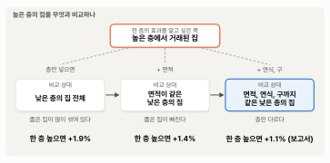
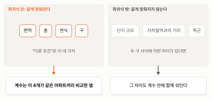

2. 다른 조건이 같다면 — 다중회귀분석의 계수#
이 장 첫머리 보고서의 회귀 결과 표는 서울 아파트 매매 63,163건으로 한 다중회귀분석의 결과를 요약한 것입니다. 이 절에서는 그 분석을 표 2-1로 다시 펼쳐 놓고 읽어 보겠습니다. 보고서가 지면 때문에 뺀 계수까지 모두 실었고, 마지막 열에는 각 계수를 “다른 조건이 같을 때의 가격 차이”로 바꿔 적었습니다. 이 열이 어떻게 나오는지가 이 절의 주제입니다.
표 2-1. 서울 아파트 거래가격의 다중회귀분석 (로그가격, 구의 기준은 노원구, \(n\) = 63,163, \(R^2\) = 0.72)
변수 |
계수 추정값 |
표준오차 |
\(t\)값 |
다른 조건이 같을 때 가격 차이 |
|---|---|---|---|---|
로그(전용면적) |
0.935 |
0.004 |
255.2 |
면적 1% 넓으면 +0.94% |
층 |
0.0107 |
0.0002 |
48.5 |
한 층 높으면 +1.1% |
연식 |
−0.0411 |
0.0005 |
−87.5 |
연식과 연식²이 함께 곡선을 그린다 (이 장의 마지막 절) |
연식² |
0.00079 |
0.00001 |
81.7 |
|
구: 강남구 |
1.032 |
0.008 |
130.5 |
노원구의 2.81배 |
구: 서초구 |
0.861 |
0.009 |
99.6 |
노원구의 2.37배 |
구: 송파구 |
0.772 |
0.007 |
115.0 |
노원구의 2.16배 |
구: 성동구 |
0.756 |
0.010 |
78.4 |
노원구의 2.13배 |
구: 용산구 |
0.725 |
0.011 |
63.2 |
노원구의 2.06배 |
구: 마포구 |
0.549 |
0.009 |
62.2 |
노원구의 1.73배 |
구: 광진구 |
0.523 |
0.012 |
43.6 |
노원구의 1.69배 |
구: 동작구 |
0.508 |
0.008 |
60.6 |
노원구의 1.66배 |
구: 강동구 |
0.391 |
0.007 |
52.6 |
노원구의 1.48배 |
구: 영등포구 |
0.368 |
0.007 |
49.2 |
노원구의 1.44배 |
구: 양천구 |
0.359 |
0.008 |
45.4 |
노원구의 1.43배 |
구: 중구 |
0.345 |
0.012 |
28.0 |
노원구의 1.41배 |
구: 종로구 |
0.261 |
0.015 |
17.1 |
노원구의 1.30배 |
구: 강서구 |
0.243 |
0.007 |
36.5 |
노원구의 1.28배 |
구: 서대문구 |
0.205 |
0.008 |
25.9 |
노원구의 1.23배 |
구: 동대문구 |
0.170 |
0.008 |
22.0 |
노원구의 1.19배 |
구: 성북구 |
0.127 |
0.007 |
18.2 |
노원구의 1.14배 |
구: 관악구 |
0.106 |
0.008 |
12.8 |
노원구의 1.11배 |
구: 은평구 |
0.006 |
0.008 |
0.8 |
노원구의 1.01배 |
구: 구로구 |
−0.016 |
0.007 |
−2.3 |
노원구의 0.98배 |
구: 중랑구 |
−0.074 |
0.008 |
−9.1 |
노원구의 0.93배 |
구: 강북구 |
−0.099 |
0.010 |
−10.0 |
노원구의 0.91배 |
구: 금천구 |
−0.193 |
0.010 |
−18.4 |
노원구의 0.82배 |
구: 도봉구 |
−0.207 |
0.008 |
−26.7 |
노원구의 0.81배 |
표가 깁니다. 구가 25개라서, 기준으로 삼은 노원구를 뺀 24개 구마다 계수가 하나씩 있기 때문입니다. 이 장 첫머리의 보고서는 1쪽에 담아야 해서 계수 표에 구 더미로는 강남구 하나만 싣고, 나머지는 그림으로 대신했습니다. 보고서의 그림 왼쪽 패널이 바로 이 24개 구의 계수를 마지막 열의 “노원구의 몇 배”로 바꿔, 구마다 점 하나로 그린 것입니다. 기준인 노원구는 1에 찍힌 주황 점입니다. 보고서의 통계 줄 끝에 적힌 “나머지 구 더미 23개는 그림의 왼쪽 패널”이 이 뜻입니다. 계수 1.032가 어떻게 “노원구의 2.81배”가 되는지는 다음 절에서 자세히 봅니다. 마찬가지로 보고서의 그림 오른쪽 패널은 연식과 연식² 두 계수를 함께 써서 그린 곡선이고, 이것은 이 장의 마지막 절에서 다룹니다.
로그 다시 보기
표 2-1의 회귀식은 가격과 면적에 로그를 취했습니다. 단순회귀분석 장의 로그 절에서 배운 규칙을 다시 떠올려 봅시다. 로그가 붙은 쪽은 퍼센트로 읽고, 안 붙은 쪽은 원래 단위로 읽습니다.
가격과 면적에 모두 로그가 붙은 면적의 계수는 탄력성입니다. 면적이 1% 넓으면 가격이 0.94% 높습니다.
가격에만 로그가 붙은 층과 구의 계수는 그 변수가 1 다를 때 가격이 몇 % 다른지를 말합니다. 계수가 작으면 계수 × 100%로 근사적으로 읽으면 되고(층 0.0107이면 약 1.1%), 계수가 크면 3절에서 배우는 정확한 계산이 필요합니다. 연식은 곡선으로 들어가 있어 예외이고, 이 장의 마지막 절에서 봅니다.
그래서 이 장의 계수는 모두 억원이 아니라 퍼센트와 배로 읽습니다. 계수를 볼 때마다 머릿속에서 한 번 더 바꿔야 해서 처음에는 번거롭습니다. 하지만 가격, 소득, 매출처럼 곱하기로 움직이는 변수는 실제 분석에서 대부분 로그를 취해 다루므로, 조금 귀찮더라도 이 장에서 여러 번 바꿔 읽으며 손에 익혀 두는 것이 좋습니다.
보고서는 이 숫자들을 읽는 법을 해석의 첫 항목 “계수 읽는 법”에 적어 두었습니다.
계수 하나하나는, 다른 조건은 모두 똑같고 그 변수 하나만 다른 두 아파트의 가격이 평균적으로 얼마나 다른지를 말한다.
이 한 줄이 이 장 전체의 열쇠입니다. 그런데 “다른 조건은 모두 똑같은 두 아파트”란 정확히 무슨 뜻일까요? 실제 거래 기록 속의 아파트들은 면적도, 층도, 연식도, 구도 제각각입니다. 다른 조건이 모두 같은 아파트끼리만 골라 비교한 것도 아닌데, 보고서는 어떻게 “다른 조건이 같다면”이라고 말할 수 있을까요?
이 물음과 이어지는 수수께끼도 하나 있습니다. 앞 절에서 던져 둔 물음입니다. 표 2-1에서 층의 계수는 0.0107, 즉 한 층에 1.1%입니다. 그런데 같은 자료로 회귀분석을 하더라도 층 하나만 넣으면 한 층에 1.9%가 나옵니다. 여기에 면적을 더하면 1.4%로 내려가고, 연식과 구까지 더하면 표 2-1의 1.1%가 됩니다. 같은 층의 효과인데, 층과 어떤 변수를 함께 넣느냐에 따라 결과가 달라지는 것이죠.
미리 답부터 말하면, 다중회귀분석의 계수는 공정한 실험의 결과입니다. 다른 조건을 같게 맞춰 놓고 변수 하나만 바꿔 본 비교의 결과이고, 무엇을 같게 맞췄느냐가 달라지면 결과도 달라집니다. 이 절이 끝나면 보고서의 계수 하나하나가 “어떤 조건을 같게 맞춘 비교인지”와 함께 읽힐 것입니다.
공정한 실험의 규칙#
과학 시간에 해 본 식물 기르기 실험을 떠올려 봅시다. 햇빛이 식물을 더 잘 자라게 하는지 알아보려고 화분 두 개를 준비합니다. 하나는 창가에, 하나는 그늘에 둡니다. 2주 뒤 창가의 화분이 훨씬 크게 자랐습니다. 햇빛 덕분일까요?
그런데 알고 보니 창가 화분에는 물을 더 자주 줬고, 흙도 더 좋은 것을 썼습니다. 그러면 결론을 내릴 수 없습니다. 더 자란 것이 햇빛 때문인지, 물 때문인지, 흙 때문인지 가려낼 길이 없으니까요. 그래서 과학 시간에는 이렇게 배웁니다. 물, 흙, 화분 크기, 씨앗은 모두 똑같이 하고, 햇빛 하나만 다르게 하라. 그래야 두 화분의 차이를 햇빛의 효과라고 말할 수 있습니다. 이것이 이 절 전체를 꿰는 한 문장입니다.
효과 하나를 보려면, 나머지는 같게 두고 그것 하나만 다르게 한다.
아파트 가격을 두고 이런 실험을 할 수 있다면 좋겠지만, 할 수 없습니다. 완전히 똑같은 아파트를 노원구에도 짓고 강남구에도 지어 값을 비교해 볼 수는 없고, 같은 아파트를 새로 지은 상태로 한 번, 30년 된 상태로 한 번 팔아 볼 수도 없습니다. 우리 손에 있는 것은 이미 일어난 거래의 기록뿐이고, 그 기록 속의 아파트들은 여러 조건이 한꺼번에 다릅니다. 물도 흙도 햇빛도 제각각인 화분들만 잔뜩 있는 셈입니다. 그래도 방법이 있습니다. 다중회귀분석은 이런 기록으로 회귀식을 세우고, 그 회귀식 안에서 나머지를 똑같이 두고 하나만 바꿔 봅니다. 실험실 대신 회귀식 안에서 실험을 하는 셈입니다. 어떻게 그럴 수 있는지는 식을 한 번 들여다보면 알 수 있습니다.
회귀식 안의 실험 — 계수의 뜻#
변수가 두 개뿐인 회귀식을 생각해 봅시다. 층과 면적으로 가격을 설명하는 식입니다. 표 2-1의 회귀식은 가격과 면적에 로그를 취했지만, 원리를 보는 동안에는 설명을 단순하게 하려고 잠시 로그 없이 그냥 가격과 면적으로 쓰겠습니다. 로그를 취해도 아래의 원리는 똑같습니다.
식에서 각 변수에 곱해지는 숫자 \(b_1\), \(b_2\)를 계수(coefficient)라고 부릅니다. 단순회귀분석 장에서 기울기라고 부르던 숫자가 변수마다 하나씩 생긴 것입니다. 회귀분석은 자료를 가지고 \(a\), \(b_1\), \(b_2\)의 값을 정하고, 표 2-1의 “계수 추정값” 열이 바로 이렇게 정한 값들입니다.
참고: 엄밀히 말하면 식의 계수는 우리가 모르는 참값이고, 표의 계수 추정값은 이 자료로 그 참값을 추정한 값입니다. 통계학에서는 둘을 구별하려고 추정값에 모자(^)를 씌웁니다. 가령 참값이 \(b\)라면 추정값은 \(\hat{b}\)으로 쓰고 “비 햇”이라고 읽습니다. 다른 표본을 뽑으면 \(\hat{b}\)은 조금 다르게 나오지만, \(b\)는 그대로입니다. 이 책은 식은 모자 없이 쓰고, 기호에 추정한 숫자를 붙일 때만 모자를 씌웁니다(가령 표 2-1의 층이라면 \(\hat{b}\) = 0.0107).
이제 이 식 안에서 공정한 실험을 해 봅니다. 아파트 두 채가 있습니다. 면적은 똑같고, 층만 하나는 11층, 하나는 10층입니다. 두 아파트를 식에 넣으면 이렇게 됩니다.
두 식을 빼 봅시다. \(a\)는 양쪽에 똑같이 있으니 지워집니다. 면적이 똑같으니 \(b_2 \times \text{면적}\)도 지워집니다. 남는 것은 \(b_1 \times 11 - b_1 \times 10\), 즉 \(b_1\) 하나입니다.
면적은 똑같고 층만 한 층 다른 두 아파트의 가격 차이가 \(b_1\)이라는 뜻입니다. 화분 실험에서 물과 흙을 똑같이 맞추고 햇빛만 다르게 한 것과 같은 일을, 식이 뺄셈 한 번으로 해 준 것이죠.
변수가 네 개로 늘어도 원리는 같습니다. 표 2-1의 회귀식에는 면적, 층, 연식, 구가 들어 있습니다. 두 아파트가 다른 조건은 모두 똑같고 층만 한 층 다르면, 뺄셈에서 나머지 변수의 항은 모두 지워지고 층의 계수만 남습니다. 보고서의 해석에 적힌 “계수 읽는 법”이 바로 이 뺄셈에서 나온 문장입니다. 이제 로그로 돌아가면, 표 2-1에서 층의 계수는 0.0107입니다. 가격에 로그를 취했으므로 이 차이는 억원이 아니라 퍼센트로 읽어 “다른 조건이 같다면 한 층 높을수록 1.1% 비싸다”가 됩니다.
아파트 한 채로 확인해 보겠습니다. 표 2-1의 회귀식은 일종의 가격 계산기라서, 면적, 층, 연식, 구를 넣으면 예상 가격이 나옵니다. 노원구, 전용 84㎡, 10층, 지은 지 26년인 아파트 한 채를 넣으면 약 8.1억원이 나옵니다. 단순회귀분석 장의 보고서가 노원구 84㎡에 대해 내놓은 8.3억원과 거의 같은 값입니다. 여기서 다른 조건은 그대로 두고 층만 20층으로 바꾸면 9.0억원이 나옵니다. 한 층에 1.1%씩 열 번, 즉 약 11% 비싸진 것입니다. 표 2-1의 마지막 열이 말하는 것이 바로 이런 실험의 결과입니다. 계수 하나는 다른 조건을 그대로 둔 채 그 변수 하나만 바꾼 실험의 결과입니다.
다만 “계수 읽는 법”에는 “평균적으로”라는 말이 들어 있습니다. 회귀식이 내놓는 것은 예상 가격이고, 실제로 조건이 똑같은 두 아파트를 찾아도 두 가격의 차이가 꼭 1.1%가 되지는 않습니다. 같은 조건에서도 실제 가격은 예상 가격 주위로 흩어지기 때문입니다. 계수는 그런 차이들의 평균적인 크기를 말합니다.
같게 맞추면 숫자가 달라진다#
이제 “같게 맞춘다”는 것이 결과를 얼마나 바꾸는지 보겠습니다. 이번에는 표 2-1처럼 가격에 로그를 취해 식을 쓰겠습니다. 앞에서 쓴 식에서 면적 항을 빼고, 층 하나만 넣은 회귀식을 생각해 봅시다.
식에 면적이 없으니 두 아파트의 면적을 같게 맞추지 않은 것이고, \(b_1\)은 “면적이 같은 두 아파트”의 차이가 아니라 높은 층에서 거래된 아파트들과 낮은 층에서 거래된 아파트들을 그대로 비교한 차이가 됩니다. 이렇게 아무것도 맞추지 않고 그대로 비교하는 것을 단순 비교라고 부르겠습니다. 서울 전체 자료로 층 하나만 넣은 회귀분석을 하면, 아래 표 2-2에서 보는 것처럼 한 층 높으면 가격이 1.9% 더 높은 것으로 나옵니다. 맨 앞에 나온 표 2-1의 1.1%보다 훨씬 큽니다.
표 2-2. 함께 넣은 변수에 따라 달라지는 층의 계수 (서울 아파트 63,163건, 로그가격)
회귀식에 넣은 변수 |
층의 계수 |
한 층 높으면 |
|---|---|---|
층 |
0.0184 |
+1.9% |
층, 면적 |
0.0138 |
+1.4% |
층, 면적, 연식(곡선) |
0.0117 |
+1.2% |
층, 면적, 연식(곡선), 구 (표 2-1) |
0.0107 |
+1.1% |
표에서 보듯이 함께 넣는 변수가 늘어날수록 층의 계수는 작아져, 층 하나만 넣었을 때의 1.9%에서 표 2-1의 1.1%까지 내려옵니다.
이 비교는 앞의 화분 실험에서 물과 흙까지 다르게 한 비교와 같습니다. 높은 층에서 거래된 아파트와 낮은 층에서 거래된 아파트는 층만 다른 것이 아니라 아파트 자체도 다릅니다. 여기서 층은 건물이 몇 층짜리인지가 아니라 거래된 집이 몇 층에 있는지입니다. 1년 동안 거래된 아파트 가운데 21층 이상에 있는 아파트의 평균 면적은 85㎡인데, 3층 이하에 있는 아파트는 75㎡입니다. 높은 층 아파트가 대체로 더 넓고, 더 새것이기도 합니다(중위 연식 18년 대 26년). 그래서 1.9% 안에는 층의 차이와 함께 면적의 차이, 연식의 차이가 섞여 있습니다.
면적을 함께 넣으면 식은 이렇게 됩니다.
앞에서 본 식에 로그를 취한 것입니다. 그러면 뺄셈에서 면적 항이 지워지고, \(b_1\)은 “면적이 같은 두 아파트에서 한 층의 차이”가 됩니다. 이 회귀분석을 하면 한 층에 1.4%입니다(표 2-2). 같은 방식으로 연식을 더하고, 구까지 더해 맨 앞에 나온 표 2-1의 회귀식이 되면 1.1%입니다.
이 변화를 읽는 열쇠는 하나입니다. 조건을 하나 맞추면, 비교되는 상대가 바뀝니다. 단순 비교에서 높은 층에서 거래된 아파트의 비교 상대는 낮은 층에서 거래된 아파트 전체였고, 거기에는 높은 층 아파트보다 좁은 아파트가 많았습니다. 면적을 맞추면, 이번에는 비교 상대가 “면적이 같은” 낮은 층 아파트로 바뀝니다. 단순 비교의 1.9% 안에는 층이 높아서 비싼 몫과 함께, “높은 층 아파트 가운데 넓은 아파트가 많아서 비싼 몫”까지 들어 있었던 셈입니다. 연식과 구까지 같게 맞출수록 비교 상대인 낮은 층 아파트는 층만 빼고 높은 층 아파트와 점점 더 닮아 가고, 그렇게 가장 많이 닮은 상대와 비교한 마지막 값이 보고서의 1.1%입니다. 화분 실험에서 물과 흙을 하나씩 똑같이 맞춰 가는 것과 같습니다. 그림 2-1이 비교 상대가 바뀌어 가는 모습을 보여 줍니다.

그림 2-1. 조건을 하나 맞출 때마다 바뀌는 비교 상대와 한 층의 가격 차이. 숫자는 표 2-2이고, 연식만 더한 단계(+1.2%)는 줄였다.
그림에서 보듯이 왼쪽에서 오른쪽으로 조건을 하나씩 맞출 때마다, 높은 층의 집과 비교하는 낮은 층의 집이 점점 높은 층의 집을 닮아 갑니다. 그에 따라 한 층의 차이는 1.9%에서 1.4%, 1.1%로 줄어듭니다. 줄어든 몫은 층이 높아서가 아니라 면적, 연식, 구가 달라서 생긴 차이였던 것이죠.
이렇게 회귀식에 함께 넣어 같게 맞추는 것을 그 변수를 통제한다(control)고 말합니다. “면적을 통제하면”은 “면적이 같다면”과 같은 말입니다. 뺄셈에서 지워지는 것은 회귀식에 함께 넣은 변수의 항뿐이므로, 회귀식에 무엇을 함께 넣느냐가 곧 무엇을 같게 맞추느냐입니다. 그래서 표 2-1의 1.1%는 “면적, 연식, 구가 같은 아파트끼리 비교하면 한 층에 1.1%”로 읽습니다.
거꾸로 보면, 층 하나만 넣은 회귀식에서는 면적이 빠져 있어서 면적의 몫(넓어서 비싼 몫)을 층의 계수가 떠안았습니다. 이렇게 회귀식에서 빠진 변수의 몫을 다른 변수가 떠안아 생기는 차이를 통계학에서는 누락 변수 편향(omitted variable bias)라고 부릅니다. 계수는 무엇을 함께 넣었느냐에 따라 달라지므로, 계수를 읽을 때는 언제나 어떤 변수를 함께 넣은 회귀식의 계수인지를 함께 봐야 합니다.
“같다면”의 범위#
마지막으로 꼭 기억할 것이 하나 있습니다. 다중회귀분석이 같게 맞춰 주는 것은 회귀식에 넣은 변수뿐입니다. 표 2-1의 회귀식에는 면적, 층, 연식, 구가 들어 있으니, “다른 조건이 같다면”의 “다른 조건”도 이 네 가지입니다. 단지 규모, 지하철역과의 거리, 학군처럼 회귀식에 없는 조건은 같게 맞춰지지 않습니다. 예를 들어 강남구 계수의 2.8배는 강남구라는 이름표 하나의 값이 아닙니다. 이 자료로는 따로 떼어 낼 수 없는 지하철역과의 거리, 학군 같은 차이가 두 구 사이에 있다면, 그 차이도 2.8배 안에 함께 들어 있습니다. 보고서가 한계에 “자료에 없는 요인은 반영되지 않았다”고 적어 둔 것이 이 뜻입니다.
그림 2-2가 이것을 보여 줍니다.

그림 2-2. “다른 조건이 같다면”의 범위 — 회귀식에 넣은 변수만 같게 맞춰진다.
그림에서 보듯이 왼쪽의 네 가지는 회귀식에 들어 있어 같게 맞춰지고, 계수는 이 네 가지가 같은 아파트끼리 비교한 셈이 됩니다. 오른쪽처럼 회귀식 밖에 있는 조건은 같게 맞춰지지 않아서, 두 구 사이에 그런 차이가 있다면 그 차이도 계수 안에 함께 섞입니다.
요약 — 이 절의 물음과 답
조건이 같은 아파트끼리 골라 비교하지 않았는데, 어떻게 “다른 조건이 같다면”이라고 말할 수 있을까? 회귀식 안에서 공정한 실험을 하기 때문이다. 다른 조건은 똑같고 한 변수만 다른 두 아파트를 회귀식에 넣어 서로 빼면, 나머지 변수의 항은 모두 지워지고 그 변수의 계수만 남는다. 그래서 보고서의 “한 층 높으면 1.1%”는 면적, 연식, 구가 같은 두 아파트의 평균적인 가격 차이다.
같은 층의 효과인데, 왜 함께 넣는 변수에 따라 달라질까? 회귀식에 함께 넣은 변수만 같게 맞춰지기 때문이고, 이렇게 함께 넣어 같게 맞추는 것을 그 변수를 통제한다고 한다. 층 하나만 넣으면 한 층에 1.9%로 나오는데, 면적이 빠져 있어서 높은 층 아파트가 대체로 더 넓어서 비싼 몫까지 층의 계수가 떠안은 것이다. 이렇게 회귀식에서 빠진 변수의 몫을 다른 변수가 떠안아 생기는 차이를 누락 변수 편향이라고 한다.
“다른 조건”은 어디까지일까? 회귀식에 넣은 면적, 층, 연식, 구까지다. 지하철역과의 거리나 학군처럼 회귀식에 없는 조건은 같게 맞춰지지 않으므로, 강남구의 2.8배 안에는 그런 차이도 함께 들어 있다.
남는 질문#
다중회귀분석의 계수가 “다른 조건을 그대로 둔 실험”의 결과라는 것까지 왔습니다. 그런데 한 가지가 설명되지 않은 채 남아 있습니다. 면적, 층, 연식은 숫자라서 계산기에 그대로 넣을 수 있지만, 구는 숫자가 아닙니다. “강남구”라는 이름을 어떻게 회귀식에 넣었을까요? 표 2-1의 “구: 강남구” 같은 계수가 그렇게 해서 나온 것이고, 강남구 계수 1.032가 어떻게 2.81배가 되는지도 거기서 나옵니다. 다음 절에서 다룹니다.